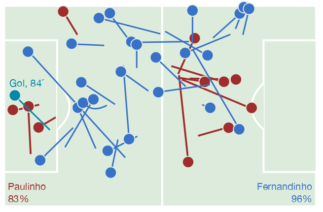
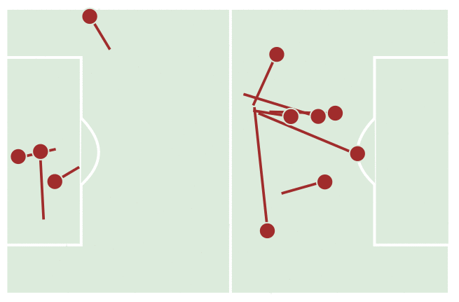

Futebol / Arquivo
Paulinho ou Fernandinho?
Os passes de dois volantes brasileiros na partida contra Camarões, na Copa de 2014.
Publicação original
A Copa do Mundo atrapalhou um pouco as publicações, mas nada como aproveitar o evento para retornar com uma análise bastante simples do último jogo do Brasil. Uma rápida busca no Google revela a importância da discussão sobre o meio-campo da seleção, mais especificamente se devemos manter o Paulinho para os próximos jogos ou se o Fernandinho deve ser o titular.


O PVC fez uma boa análise dos números dos dois jogadores aqui; outros sites trazem as estatísticas e análise do desempenho de cada jogador (como o Footstats – aqui ou aqui). E a conclusão das análises é quase sempre a mesma: o Fernandinho teve desempenho superior e deve entrar no lugar do Paulinho. Porém sem entrar em qualquer discussão sobre qual a melhor escalação ou comparar atuações, o site do Huffington Post é uma ótima referência para o jornalismo esportivo brasileiro e uma ótima fonte de informação para leigos como eu. O site traz algumas estatísticas de cada jogo, gráfico de passes e chutes a gol, o posicionamento médio de cada jogador na partida e a visualização da jogada que precedeu cada gol. No quesito Paulinho ou Fernandinho, o site apresenta o gráfico de passes de cada jogador em svg, o que possibilita a coleta dos dados para comparação. A escolha não parece tão complicada.


Como de costume, deixo um formulário abaixo para aqueles que quiserem mais informações sobre a análise acima.